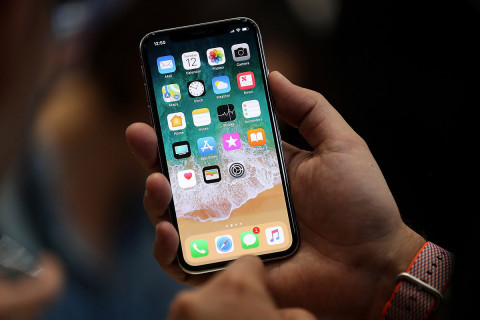
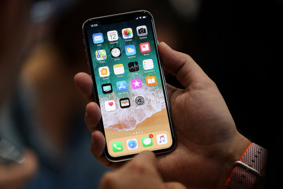

Smart Technology
Io T Devices
These devices are products which are ‘software-defined’. They are a product that is capable of analytics, they use applications, and they have the ability to utilize the network using the Internet. These devices are more beneficial than your typical connected smart devices because they are automated and upgradable, which makes them ready for any future changes that may come along.
 

1. Smart Watch
A smartwatch is a wearable computing device marketed as more than a cell phone. With a glance, it gives atomic clock accuracy and allows you to read your text messages in a device that is always at hand.
A smartwatch includes a variety of features, such as a watch, cell phone, calculator, camera, GPS navigation, SD card, touchscreen and rechargeable battery. The technology behind the smartwatch, developed by Microsoft, is known
as Smart Personal Object Technology (SPOT) in an attempt to personalize everyday devices.
2. Smart Keys
A Smart Key is a key with digital or information features that can facilitate more functionality than just unlocking a physical or digital lock system. With the emergence of new technologies that can use radio frequency (RF) signals and convert
them to digital information, the use of smart keys has become more widespread in many industries, including the automotive field and the hospitality industry.
Many types of smart keys are being designed using more advanced technology that can hold more information for devices that people use every day. Some of the work being done on smart key systems parallels other developments like
the Apple Pay contactless payment system, which is changing the ways e-commerce is done. A smart key is a broad term that is likely to become even more common in tomorrow's world, as smart security techniques like biometrics and encryption
replace old physical lock-and-key systems.
3. Smartphone
A smartphone is a mobile phone with highly advanced features. A typical smartphone has a high-resolution touch screen display, WiFi connectivity, Web browsing capabilities, and the ability to accept sophisticated applications. The majority
of these devices run on any of these popular mobile operating systems: Android, Symbian, iOS, BlackBerry OS and Windows Mobile.
A smartphone is expected to have a more powerful CPU, more storage space, more RAM, greater connectivity options and larger screen than a regular cell phone. High-end smartphones now run on processors with high processing speeds
coupled with low power consumptions. That means, they’ll allow you to play 3D games, browse the Web, update your Facebook account, call, and text much longer than you used to.
In addition to the features mentioned earlier, smartphones are also equipped with innovative sensors like accelerometers or even gyroscopes. Accelerometers are responsible for displaying screens in portrait and landscape mode,
while gyroscopes make it possible for games to support motion-based navigation.
4. Smart Refrigerator
A Smart Refrigerator is a high-tech programmed refrigerator that is able to detect the type of items stored in it and keep track of important details such as expiry and usage. These refrigerators work on a barcode or RFID system whereby they
collect the batch and manufacture detail directly from the Internet.
A Smart Refrigerator allows a user to know which items are inside the refrigerator without opening it, by simply checking the display list on an LCD or other output device. The refrigerator is able to send its content list to
various other display devices and is able to communicate via various mediums.
5. Smart television
Smart television (Smart TV) is TV that provides interactive features similar to those involved in Internet or Web services. This includes the ability to search for video or interact with the television in other ways. This can be done through
a set-top box or through internal technology in the television, such as an operating system that commands and controls these interactive features. Smart TV is also called connected TV or hybrid TV.
One common example of smart TV technology is the streaming of video from sources like Netflix or Hulu. Again, television sets can be shipped from the factory with this interactive technology, or they can be augmented with a cable
set-top box or a gaming console that supports these activities. Either way, smart TV operation typically involves internal or external hardware tools that can help users scroll or navigate through a screen in order to view movies, change
settings or otherwise control the experience.
6. Smart City
A Smart City is a designation given to a city that incorporates information and communication technologies (ICT) to enhance the quality and performance of urban services such as energy, transportation and utilities in order to reduce resource
consumption, wastage and overall costs. The overarching aim of a smart city is to enhance the quality of living for its citizens through smart technology.
There is no definitive explanation of a smart city because of the breadth of the technologies that can be incorporated into a city in order for it to be considered a smart city. Mark Deakin defines it as a city that utilizes
ICT to meet the demands of its citizens, and that community involvement in the processes is a necessity for a smart city.